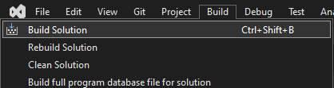
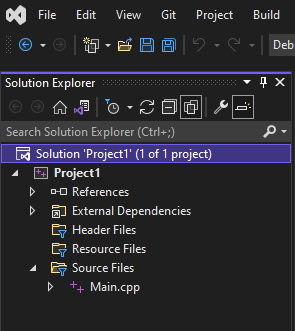
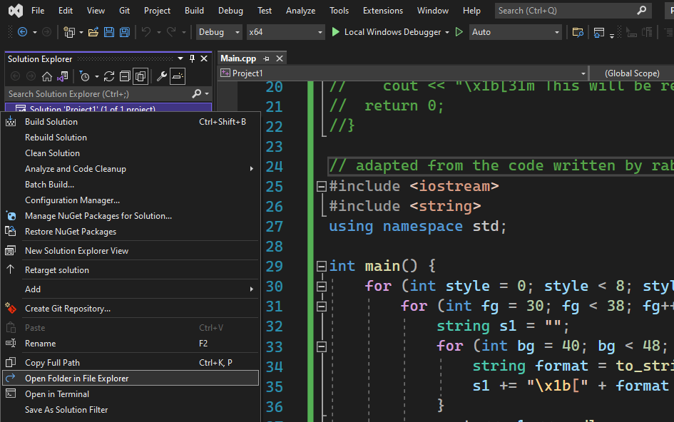
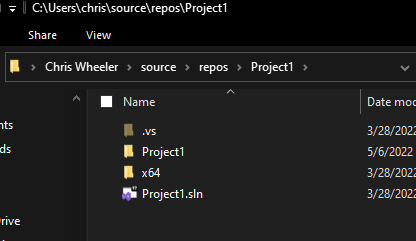
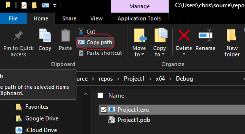

how to run your C++ app in Windows Terminal
Some IDEs in Windows 10 (not Windows 11) like Visual Studio are likely to display your app's output in a window that is missing many features. For example, Visual Studio's default output window cannot display most emoji and some text colors and styles. You can download Windows Terminal and run your code in it by following the steps below to get more output features.
- Build your app (generate an .exe file) if you haven't already.

Copy the path of the .exe file (detailed steps below).
Open Windows Terminal
Type
&, a space, paste the path to your .exe file, and press Enter.
It will look something like this:
PS C:\Users\chris> & "C:\Users\chris\source\repos\Project1\x64\Debug\Project1.exe"If you want to run the app again, just press the up arrow until the command to run it reappears. If you will run apps with commands like this often, you might want to know [§] how to create custom terminal commands.
how to copy the path of your app's .exe file
These instructions are mostly for Visual Studio. You must have successfully built your app at least once for the .exe to exist.
- In your Solution Explorer window, right click the line that starts with "Solution".


- Click "Open Folder in File Explorer".

- Open the folder named "x64", and the "Debug" folder within it.

- Select the .exe file and in File Explorer's "Home" tab, click "Copy path".